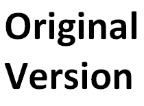

The sound of gunshots fill the air. Bodies lay all around My Lai village. Terrified villagers hide under bodies that were once friends, hiding from the murderous soldiers patrolling the village looking to destroy everything they find. The people ask themselves, “What have we done to deserve this? When will it end?” As it turns out, most of the soldiers were also asking themselves the same questions, though no one dared to disobey a direct order to destroy the village. Members of Charlie Company realized they were massacring the villagers but submitted to their group mindset because it provided comfortable for them as individuals and relieved them of the responsibility of the situation.
Upon arrival in Vietnam in 1969, the soldiers thought they would be welcomed, similar to “Paris on D-Day.” However the Vietcong resistance was strong, influential, and a lot of villages were unwelcoming. During the few weeks preceding the attack on My Lai the Americans had suffered casualties from booby traps and Vietcong attacks. Charlie Company led by Captain Ernest Medina and Lieutenant William Calley felt a desperate need for revenge. However, when that day came the situation quickly got out of control. An Army informant had mistakenly reported that the 48th Vietcong infantry battalion was being housed in nearby My Lai, when they were actually 150 miles away across the Quang Ngai province. As one soldier of Charlie Company recalls, “[they] were to literally shoot anything that moved. If it was growing, cut it down. If it was a building, burn it. If it was a well, poison it. If it was alive, kill it." Because of this order, it is believed that Charlie Company killed between 300 and 500 civilian women, children, and elderly, but reported as killing 150 Vietcong with light casualties, no deaths, and no recovered weapons. After the event, the soldiers were ordered to never speak of what they had witnessed. That is one order that a certain soldier, Warrant Officer Hugh Thompson, could not follow.
Thompson was a helicopter pilot under Company B who was providing support for Charlie Company from a scout helicopter. During the incident, he had rescued 25 people from a bunker and had ordered his crew to fire upon anyone who attempted to stop him. After the incident, Thompson and his crew immediately reported the incident to their superiors, who attempted to silence the reports. After reporting it, Thompson was assigned to excessively dangerous missions and “got the feeling that someone was trying to make him go away,” which started the coverup.
Once the top officers of the Army finally heard about the event, they conducted their own military investigation and ultimately charged 14 soldiers involved with war crimes related to the My Lai massacre. Medina, Calley, and 12 other soldiers were charged with various crimes such as premeditated murder and assault with a deadly weapon but the investigation only collected enough evidence to convict Calley with his crime, leaving the rest to either have charges dismissed or to be acquitted. Calley was dishonorably discharged and initially sentenced to life in prison but, after several appeals, only served 3 years of house arrest. He eventually gave a public apology in 1998 to all of the soldiers, living victims and their families involved in the My Lai Massacre.